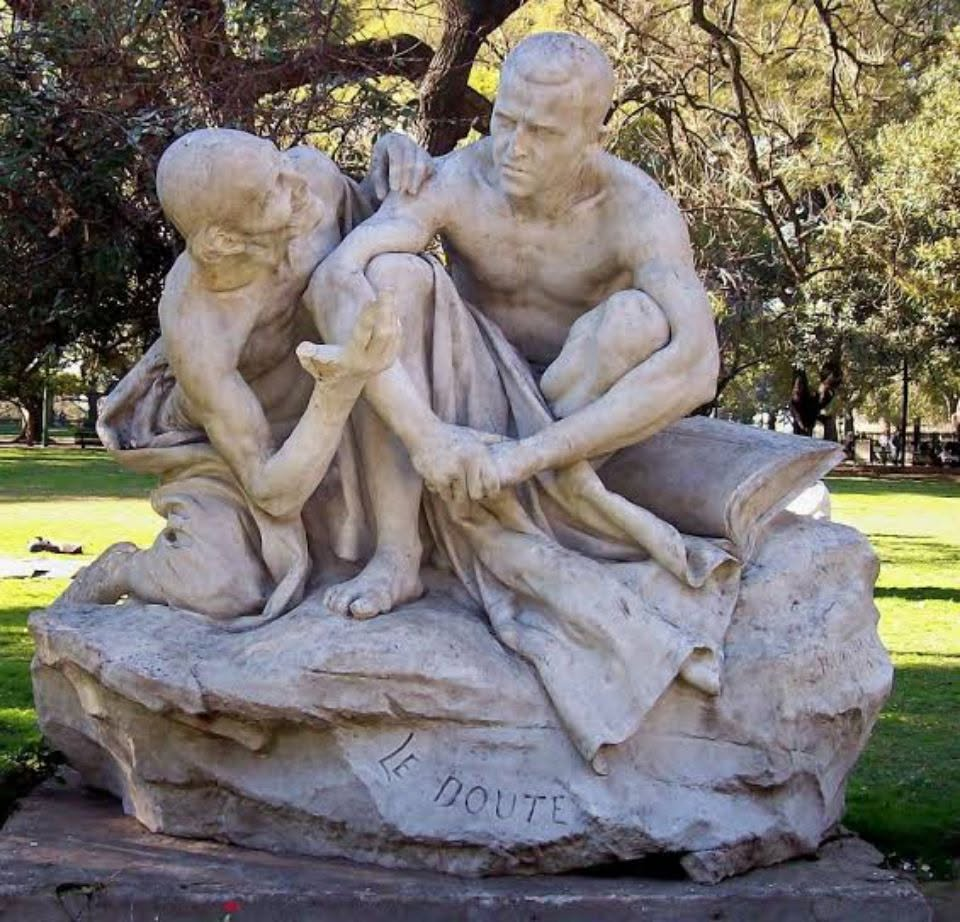

Dans la série "Les vents contraires"
N°24. La foi et le doute
La foi dit : avance.
Même si tu ne vois rien.
Même si tout autour semble vide.
Elle parle en silence,
elle vit dans l’intuition
et dans les genoux qui fléchissent
mais ne cèdent pas.
Le doute, lui,
a la voix d’un enfant
qui demande pourquoi ?
trop souvent,
à tout le monde,
même à Dieu.
Et si c’était l’équilibre ?
Marcher,
malgré le doute.
Croire,
en posant mille questions.
Ni aveugle,
ni cynique —
juste humain,
en route vers la lumière.
Djamel Metref
At Yenni le 30 août 2025

← Tous les poèmes